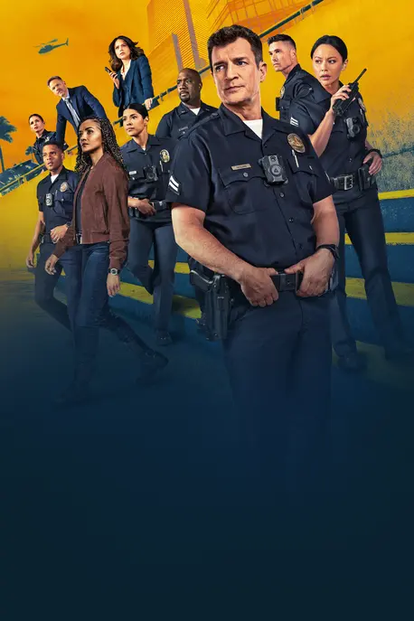
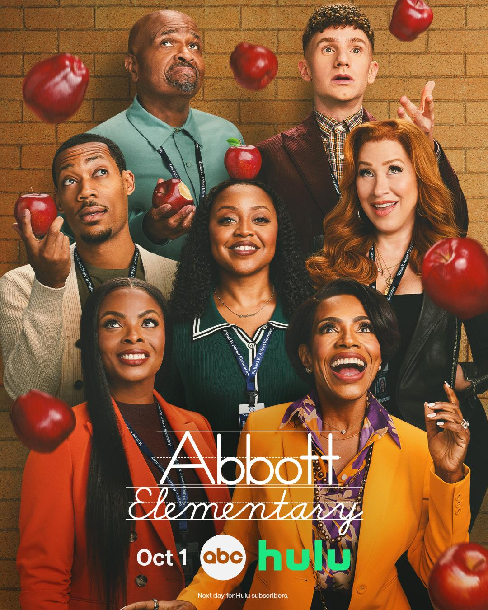

-

The rookiepersonally probably like #1 on my list, kind of obsessed, would 100% recommend
-
House MD
This was a tight decision between House and Dexter both incredible shows but something about a medical drama that isn't corny just makes it incredible not to mention the crazy plot lines and cgi
-
Dexter
bit of a classic, great story not too gory, not too scary either imo an odd amount of sexual scenes for a show about a serial killer but other than that great plot lines
-

Abbot elementaryone of the greatest sitcoms I've ever seen and i'm like that skit where andy samberg goes over how He's watched like every show ever so I've seen a lot of sitcoms and abbot is the best
-
The orville
Incredibly under rated sci-fi comedy show by seth macfarlane not enough people talk about it but its incredibly funny and I personally love sci-fi but im not really into star wars or star trek so the orville is great because it isnt boring